Install IBM Event Streams on ICP
(Tested on June 2019 on ibm-eventstreams-dev helm chart 1.2.0 on ICP 3.1.2)
You can use the ibm-eventstreams-dev or ibm-eventstreams-prod Helm chart from ICP catalog. The product installation instructions can be found here.
Note
If you need to upload the tar file for the event streams production (downloaded from IBM passport advantage or other support sites) use the following command:
cloudctl catalog load-archive --archive eventstreams.pak.tar.gz
As we do not want to rewrite the product documentation, we just want to highlight what was done for our deployment. Our cluster has the following characteristics:
- Three masters also running ETCD cluster on 3 nodes
- Three management nodes
- Three proxy
- Six worker nodes
For worker nodes we need good CPUs and hard disk space. We allocated 12 CPUs - 32 Gb RAM per worker nodes.
You need to decide if persistence should be enabled for ZooKeepers and Kafka brokers. Pre allocate one Persistence Volume per Kafka broker and one per ZooKeeper server. If you use dynamic persistence volume provisioning, ensure the expected volumes are present at installation time.
Configuration Parameters
The following parameters were changed from default settings:
| Parameter | Description | Value |
|---|---|---|
| Kafka.autoCreateTopicsEnable | Enable auto-creation of topics | true |
| persistence.enabled | enable persistent storage for the Kafka brokers | true |
| persistence.useDynamicProvisioning | dynamically create persistent volume claims | true |
| zookeeper.persistence.enabled | use persistent storage for the ZooKeeper nodes | true |
| zookeeper.persistence.useDynamicProvisioning | dynamically create persistent volume claims for the ZooKeeper nodes | true |
| proxy.externalAccessEnabled | allow external access to Kafka from outside the Kubernetes cluster | true |
The matching server.properties file is under the deployments/eventstreams folder. See parameters description in the product documentation
You can get the details of the release with: helm list 'green-events-streams' --tls or access helm detail via ICP console: Here is the helm release details:
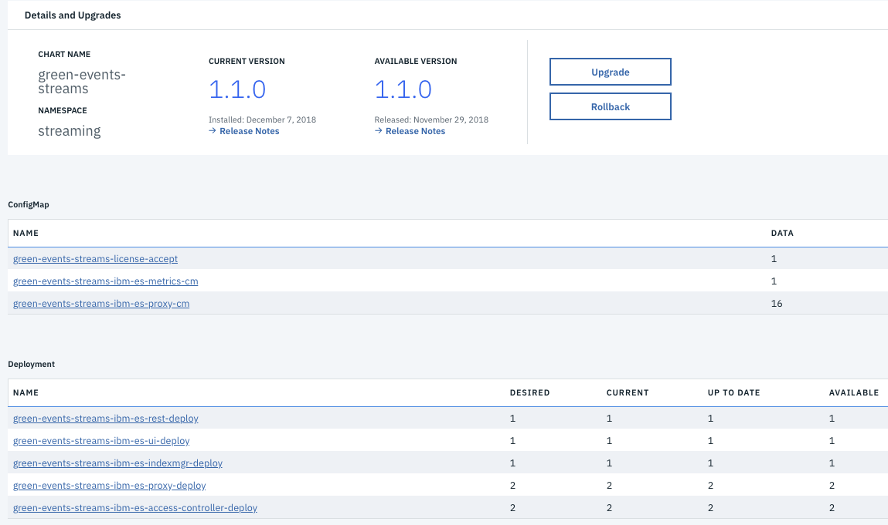
The figure above shows the following elements: * ConfigMaps for UI, Kafka proxy * The five deployments for each major components: UI, REST, proxy and access controller.
Next is the job list which shows what was run during installation. The panel lists also the current network policies:
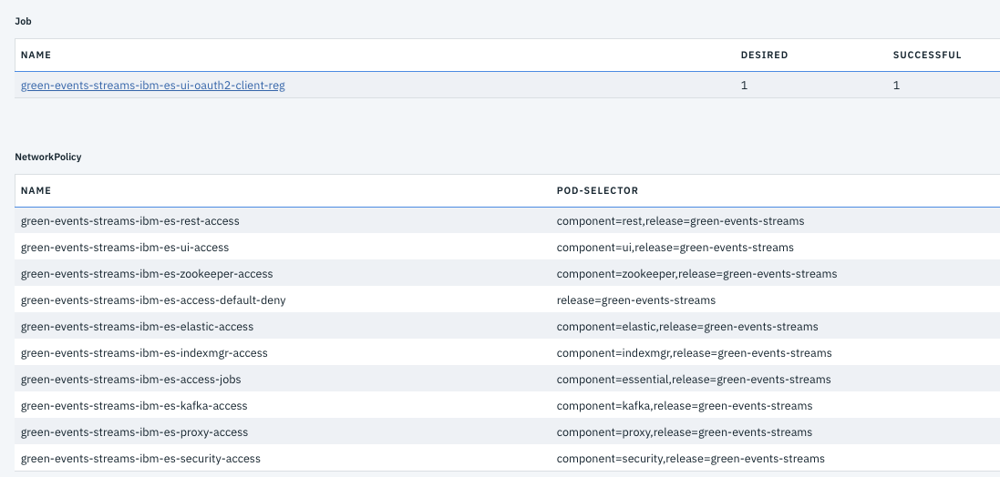
A network policy is a specification of how groups of pods are allowed to communicate with each other and other network endpoints. As soon as there are policies defined, pods will reject connections not allowed by any policies.
The pods running in the platform. (One pod was a job)
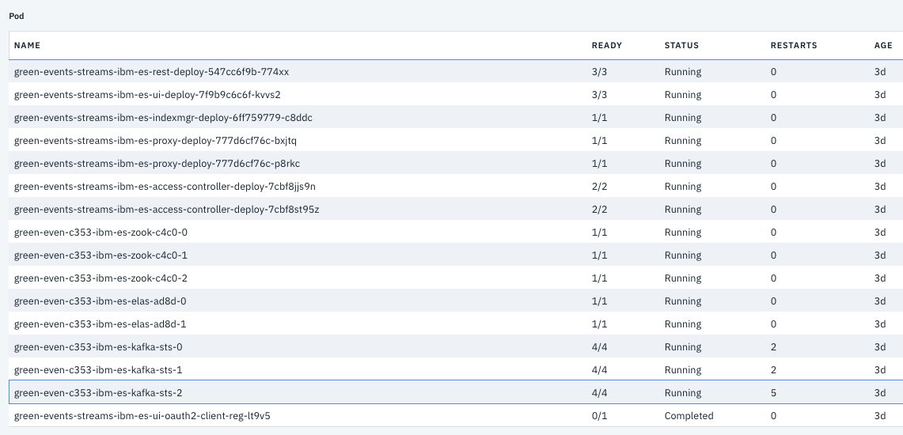
As we can see there are 3 kafka brokers, 3 zookeepers, 2 proxies, 2 access controllers.
You can see the pods running on a node using the command:
kubectl get pods --all-namespaces --field-selector=spec.nodeName=172.16.50.219
The figure below is for roles, rolebinding and secret as part of the Role Based Access Control settings.
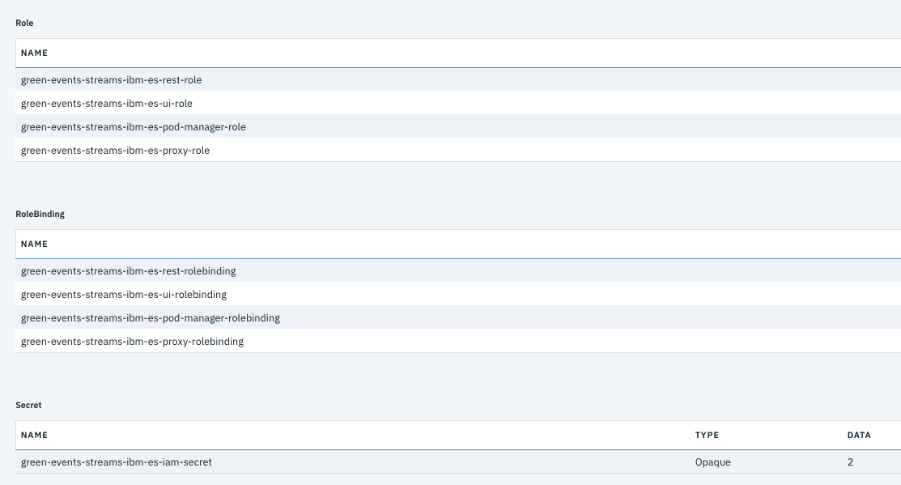
The figure below shows the services for zookeeper, Kafka and Event Stream REST api and user interface:
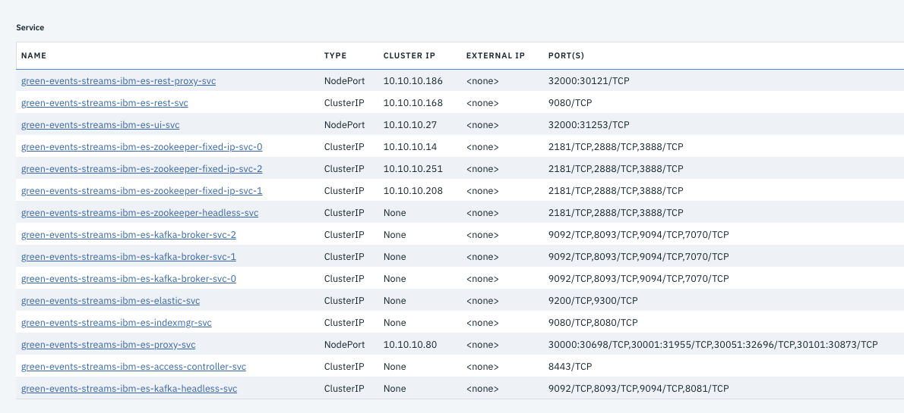
The services expose capabilities to external world via nodePort type: * The IBM Event Streams admin console is visible at the port 31253 on the k8s proxy IP address: 172.16.50.227 * The REST api port 30121 * stream proxy port bootstrap: 31348, broker 0: 32489...
You get access to the Event Streams admin console by using the IP address of the master / proxy node and the port number of the service, which you can get using the kubectl get service command like:
kubectl get svc -n streaming "green-events-streams-ibm-es-ui-svc" -o 'jsonpath={.spec.ports[?(@.name=="admin-ui-https")].nodePort}'
kubectl cluster-info | grep "catalog" | awk 'match($0, /([0-9]{1,3}\.){3}[0-9]{1,3}/) { print substr( $0, RSTART, RLENGTH )}'Here is the admin console home page:
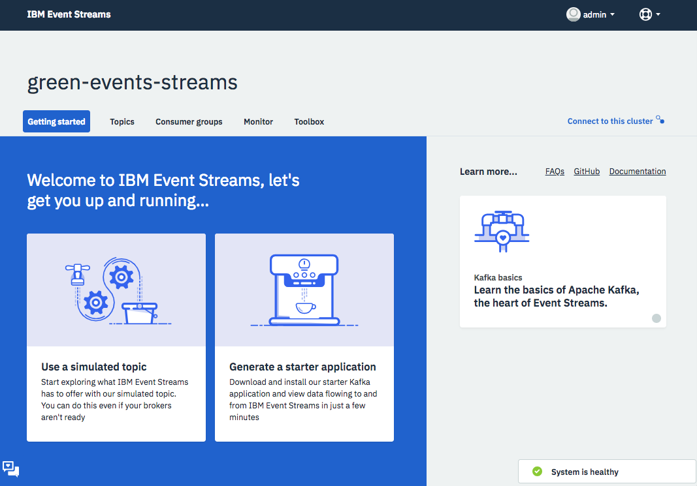
To connect an application or tool to this cluster, you will need the address of a bootstrap server, a certificate and an API key. The page to access this information, is on the top right corner: Connect to this cluster:
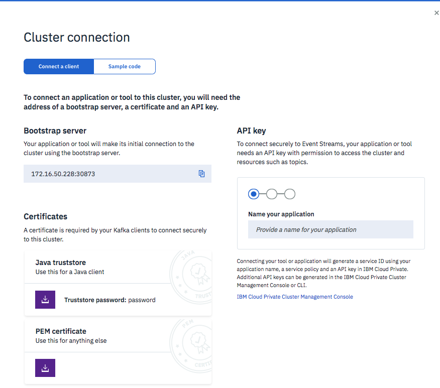
Download certificate and Java truststore files, and the generated API key. A key can apply to all groups or being specific to a group.
In Java to leverage the api key the code needs to set the some properties:
properties.put(CommonClientConfigs.SECURITY_PROTOCOL_CONFIG, "SASL_SSL");
properties.put(SaslConfigs.SASL_MECHANISM, "PLAIN");
properties.put(SaslConfigs.SASL_JAAS_CONFIG,
"org.apache.kafka.common.security.plain.PlainLoginModule required username=\"token\" password=\""
+ env.get("KAFKA_APIKEY") + "\";");
properties.put(SslConfigs.SSL_PROTOCOL_CONFIG, "TLSv1.2");
properties.put(SslConfigs.SSL_ENABLED_PROTOCOLS_CONFIG, "TLSv1.2");
properties.put(SslConfigs.SSL_ENDPOINT_IDENTIFICATION_ALGORITHM_CONFIG, "HTTPS");See code example in ApplicationConfig.java.
Some challenges during the installation
As presented in the high availability discussion in this note, normally we need 6 worker nodes to avoid allocating zookeeper and kafka servers on the same kubernetes nodes. The community edition installation is permissive on that constraint, so both products could co-exist but in that case, ensure to have enough physical resources. We have seen some Kafka brokers that could not be scheduled because some nodes have taints (can't meet the specs for the stateful set) and the remaining worker nodes don't have enough memory.
Getting started application
Use the Event Stream Toolbox to download a getting started application we can use to test the deployment and as code base for future Kafka consumer / producer development.
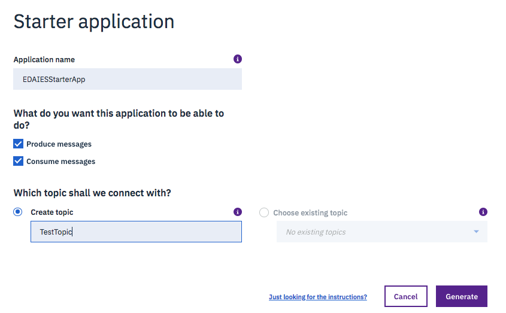
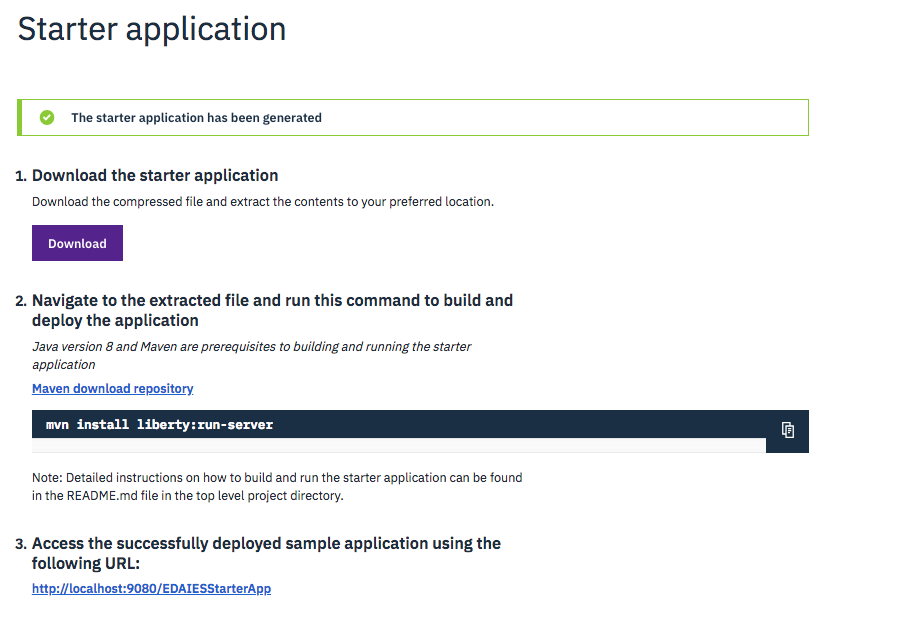
One example of the generated app is in this repository under gettingStarted/EDAIEWStarterApp folder, and a description on how to compile, package and run it: see the ./gettingStarted/EDAIEWStarterApp/README.md.
The application runs in Liberty at the URL: http://localhost:9080/EDAIESStarterApp/ and delivers a simple user interface splitted into two panels: producer and consumer.
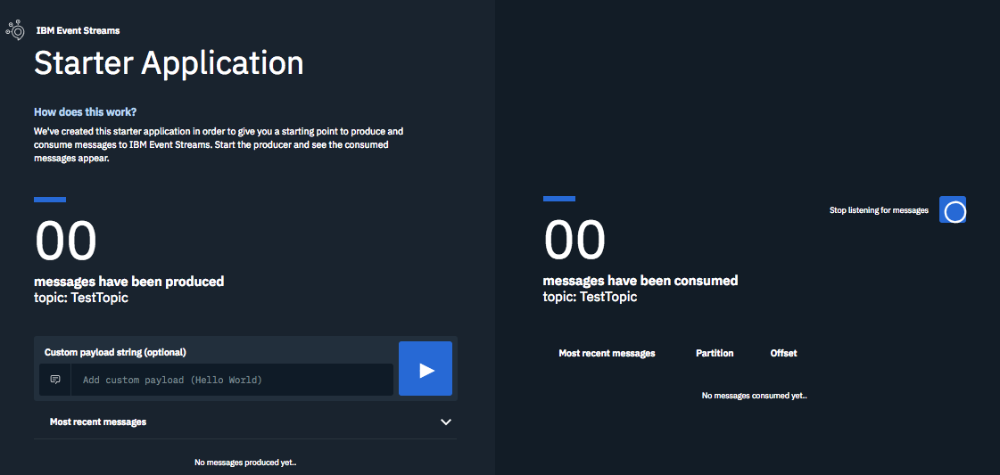
The figure below illustrates the fact that the connetion to the broker was not working for a short period of time, so the producer has error, but because of the buffering capabilities, it was able to pace and then as soon as the connection was re-established the consumer started to get the messages. No messages were lost!.
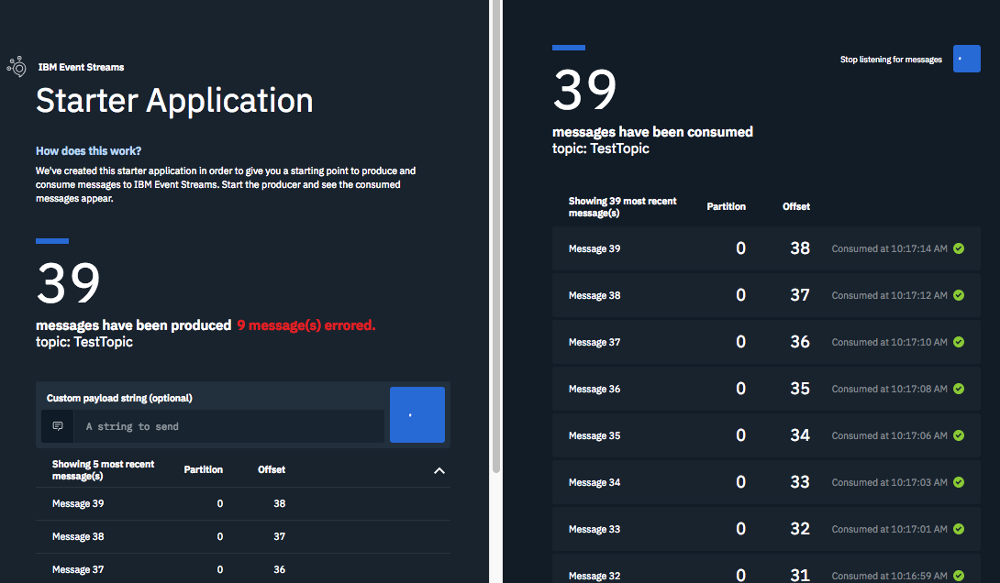
We have two solution implementations using Kafka and Event Streams the manufacturing asset analytics and the most recent KC container shipment solution. We recommend using the second implementation.
Verifying ICP Kafka installation
Once connected to the cluster with kubectl, get the list of pods for the namespace you used to install Kafka or IBM Event Streams:
$ kubectl get pods -n streaming
NAME READY STATUS RESTARTS
green-even-c353-ibm-es-elas-ad8d-0 1/1 Running 0 3d
green-even-c353-ibm-es-elas-ad8d-1 1/1 Running 0 3d
green-even-c353-ibm-es-kafka-sts-0 4/4 Running 2 3d
green-even-c353-ibm-es-kafka-sts-1 4/4 Running 2 3d
green-even-c353-ibm-es-kafka-sts-2 4/4 Running 5 3d
green-even-c353-ibm-es-zook-c4c0-0 1/1 Running 0 3d
green-even-c353-ibm-es-zook-c4c0-1 1/1 Running 0 3d
green-even-c353-ibm-es-zook-c4c0-2 1/1 Running 0 3d
green-events-streams-ibm-es-access-controller-deploy-7cbf8jjs9n 2/2 Running 0 3d
green-events-streams-ibm-es-access-controller-deploy-7cbf8st95z 2/2 Running 0 3d
green-events-streams-ibm-es-indexmgr-deploy-6ff759779-c8ddc 1/1 Running 0 3d
green-events-streams-ibm-es-proxy-deploy-777d6cf76c-bxjtq 1/1 Running 0 3d
green-events-streams-ibm-es-proxy-deploy-777d6cf76c-p8rkc 1/1 Running 0 3d
green-events-streams-ibm-es-rest-deploy-547cc6f9b-774xx 3/3 Running 0 3d
green-events-streams-ibm-es-ui-deploy-7f9b9c6c6f-kvvs2 3/3 Running 0 3dSelect the first pod: green-even-c353-ibm-es-kafka-sts-0 , then execute a bash shell so you can access the Kafka tools:
$ kubectl exec green-even-c353-ibm-es-kafka-sts-0 -itn streaming -- bash
bash-3.4# cd /opt/Kafka/binNow you have access to the kafka tools. The most important thing is to get the hostname and port number of the zookeeper server. To do so use the kubectl command:
$ kubectl describe pods green-even-c353-ibm-es-zook-c4c0-0 --namespace streamingIn the long result get the client port ( ZK_CLIENT_PORT: 2181) information and IP address (IP: 192.168.76.235). Using this information, in the bash shell within the Kafka broker server we can do the following command to get the topics configured.
$ ./Kafka-topics.sh --list -zookeeper 192.168.76.235:2181
# We can also use the service name of zookeeper and let k8s DNS resolve the IP address
$ ./Kafka-topics.sh --list -zookeeper green-even-c353-ibm-es-zook-c4c0-0.streaming.svc.cluster.local:2181Using the Event Stream CLI
If not done already, you can install the Event Stream CLI on top of IBM cloud CLI by first downloading it from the Event Stream console and then running this command:
$ cloudctl plugin install ./es-pluginHere is a simple summary of the possible cloudctl es commands:
# Connect to the cluster
cloudctl es init
# create a topic - default is 3 replicas
cloudctl es topic-create streams-plaintext-input
cloudctl es topic-create streams-wordcount-output --replication-factor 1 --partitions 1
# list topics
cloudctl es topics
# delete topic
cloudctl es topic-delete streams-plaintext-input